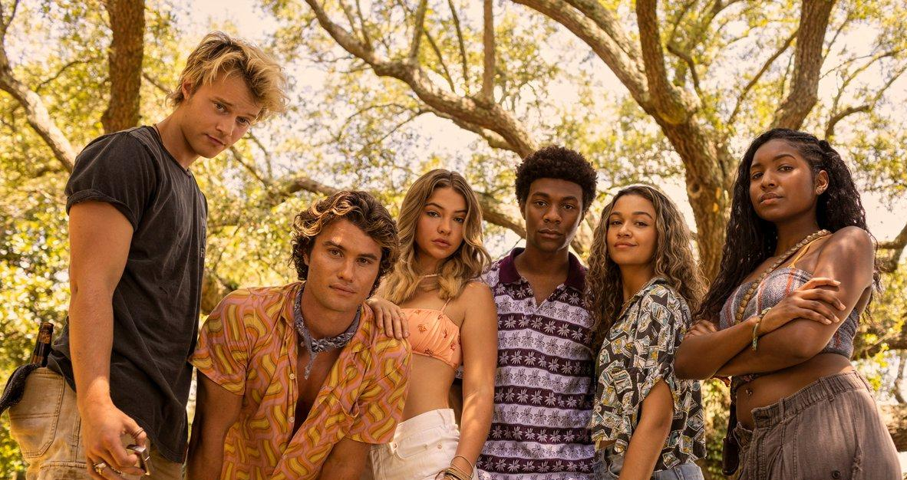
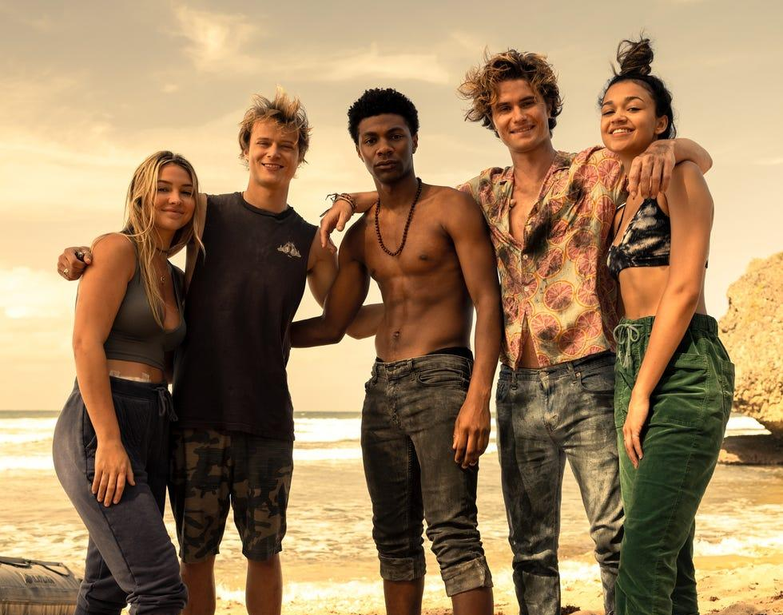

Outer Banks é uma série de televisão que acompanha um grupo de adolescentes conhecidos como Pogues, que vivem numa ilha da Carolina do Norte.

A história começa quando John B e os seus amigos embarcam numa aventura à procura de um tesouro perdido, enfrentando vários perigos, segredos e rivalidades pelo caminho.
Sabe mais na página oficial de Outer Banks na Netflix.